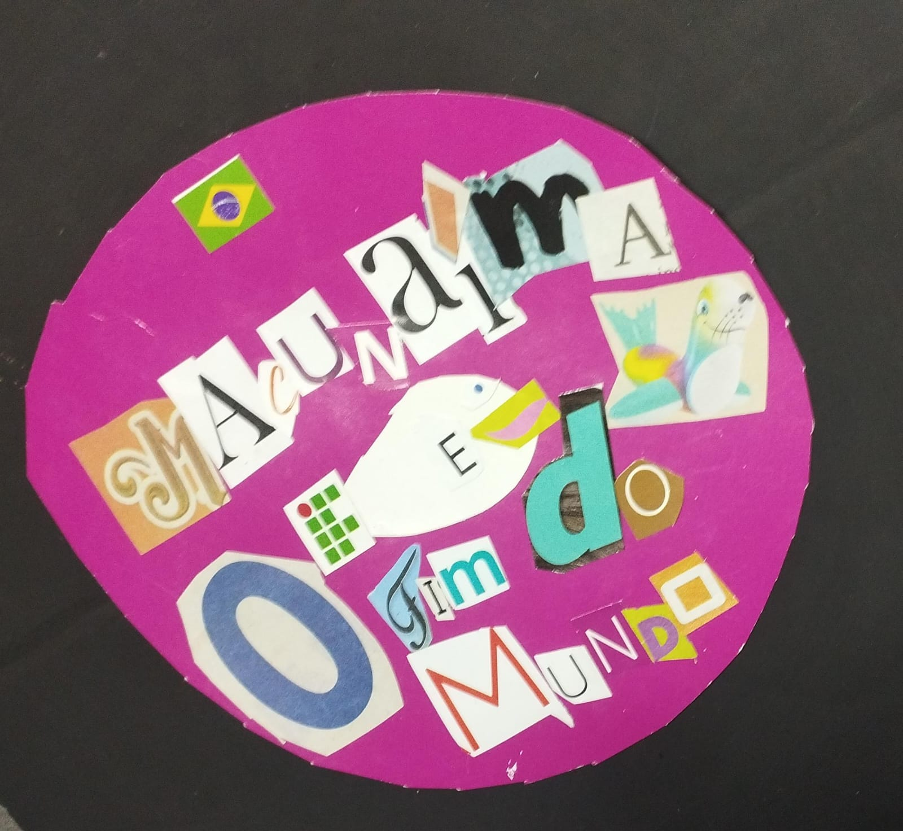

Minha Música
Isabela
0:00
0:00

Isabela
Um dia, numa rua da cidade
Eu vi um velhinho sentado na calçada
Com uma cuia de esmola
E uma viola na mão
O povo parou para ouvir
Ele agradeceu as moedas
E cantou essa música
Que contava uma história
Que era mais ou menos assim
Quando o samba começou na areia
Festa na aldeia de Tupinambá
Fez brilhar a luz da lua cheia
Deus Tupã clareia deixa clarear
Jurunas, Guaranis, Caingangues, Caipis
Terenas, Carajás e Suruís
Xavantes, Pataxós, Apurinãs, Kamayurás
Cambebas, Canidés e Cariris
São povos do brasil donos desse chão
Herança cultural do nosso sangue
Eu sou Tupiniquim, sou Caiapó
Sou Curumim, Tumbalalá, Kaxinawá
Comer tatu é bom
Que pena que dá dor nas costas
Porque o bicho é baixinho
E é por isso que eu prefiro as cabritas
As cabrita têm seios
Que alimentam
Eu quero te provar
Sem medo e sem amor
Uooh!
Quero te provar
Por quê?
Porque ela derrama um banquete, um palacete
Um anjo de vestido, uma libido do cacete
Ela é tão, tão vistosa, que talvez seja mentira
Quem dera minha cara fosse de sucupira
Agora
Que faço eu da vida sem você?
Você não me ensinou a te esquecer
Você só me ensinou a te querer
E te querendo eu vou tentando te encontrar
Vou me perdendo
Buscando em outros braços os seus abraços
Bailam corujas e pirilampos
Entre os Sacis e as fadas
E, lá no fundo azul (lá no fundo azul), na noite da floresta
A Lua iluminou a dança, a roda, a festa
Vira, vira, vira
Vira, vira, vira homem, vira, vira
Vira, vira lobisomem
Vira, vira, vira
Vira, vira, vira homem, vira, vira
A água me contou muitos segredos
Guardou os meus segredos
Refez os meus desenhos
Trouxe e levou meus medos
A Grande mãe me viu num quarto cheio d'água
Num enorme quarto lindo e cheio d'água
E eu nunca me afogava
O mar total e eu dentro do eterno ventre
E a voz de meu pai, voz de muitas águas
No canto do Brasil
Um lamento triste sempre ecoou
Desde que um índio guerreiro
Foi pro cativeiro e de lá cantou
Negro entoou
Um canto de revolta pelos ares
No Quilombo dos Palmares
Onde se refugiou
Quem me dera, ao menos uma vez
Ter de volta todo o ouro que entreguei a quem
Conseguiu me convencer que era prova de amizade
Se alguém levasse embora até o que eu não tinha
Quem me dera, ao menos uma vez
Esquecer que acreditei que era por brincadeira
Que se cortava sempre um pano de chão
De linho nobre e pura
Os estrangeiros, eu sei que eles vão gostar
Tem o Atlântico, tem vista pro mar
A Amazônia é o jardim do quintal
E o dólar deles paga o nosso mingau
Nós não vamo paga nada
Nós não vamo paga nada
É tudo free!
Tá na hora agora é free
Vamo embora dá lugar pros gringo entrar
Pois esse imóvel está pra alugar
Eu queria um apartamento no Guarujá
Mas o melhor que eu consegui foi um barraco em Itaquá
Você não sabe como parte um coração
Ver seu filhinho chorando, querendo ter um avião
Você não sabe como é frustrante
Ver sua filhinha chorando por um colar de diamante
Cê não sabe como eu fico chateado
Ver meu cachorro babando por um carro importado
Money
Que é good nóis num have (have)
Se nóis hevasse, nóis num tava aqui playando
Mas nóis precisa de worká
Seu carro é americano
Seu queijo é holandês
Seu azeite vem da Espanha
O seu vinho é português
Dentro do seu palacete só se fala inglês
Dentro do seu palacete só se fala inglês
Não toca nosso samba
Não gosta de pandeiro
Veste um tecido nosso
Diz que é do estrangeiro
Fala mal do que é nosso, diz que é brasileiro
Fala mal do que é nosso, diz que é brasileiro
🎵🎵🎵🎵 (Milonga)
Índia seus cabelos nos ombros caídos
Negros como a noite que não tem luar
Seus lábios de rosa para mim sorrindo
E a doce meiguice desse seu olhar
A criminalidade toma conta da cidade
A sociedade põe a culpa nas autoridades
O Cacique oficial viajou pro Pantanal
Porque aqui a violência tá demais
E lá encontrou um velho índio que usava um fio dental
E fumava um cachimbo da paz
Fumo de rolo, arreio de cangalha
Eu tenho pra vender, quem quer comprar?
Bolo de milho, broa e cocada
Eu tenho pra vender, quem quer comprar?
Pé de moleque, alecrim, canela
Moleque, sai daqui, me deixa trabalhar
E Zé saiu correndo pra Feira Dos Pássaros
E foi passo-voando pra todo lugar
Tinha uma vendinha no canto da rua
Onde o mangaieiro ia se animar
Tomar uma bicada com lambu assado
E olhar pra Maria do Juá
Curió do bico doce, passarinho
Quem te trouxe pra chamar meu carimbó
Foi Verequete Verê, foi Verequete Verê
Foi Verequete, foi Lucinda e Cupijó Curió do bico doce,
passarinho
Quem te trouxe pra chamar meu carimbó
Vou-me embora, vou-me embora
Eu aqui volto mais não
Vou morar no infinito
E virar constelaçãoVou-me embora, vou-me embora
Eu aqui volto mais não
Vou morar no infinito
E virar constelação
Conheça as músicas utilizadas para a produção do trabalho:
A ideia surgiu justamente do amor dos integrantes do grupo pela música e do desejo de mesclar a sonoridade com a literatura.
O grupo buscou músicas brasileiras para representar o amor pela nação retratado nas duas obras.
Além disso, decidiu-se fazer uma colagem de trechos de músicas, remetendo à escrita do livro Macunaíma e à estrutura de rapsódia.
As músicas escolhidas abordam críticas sociais ao consumismo e ao capitalismo,
além da busca pela valorização da natureza e dos diversos povos que formam o Brasil.
Um arquivo de áudio com trechos de diversas canções brasileiras que entrelaçam as ideias de Krenak e a narrativa de Andrade.